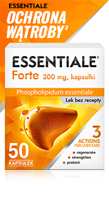
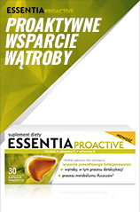

Wątroba odgrywa niezwykle ważną rolę w prawidłowym funkcjonowaniu organizmu. Aby móc w pełni wykorzystywać energię i cieszyć się zdrowiem, odśwież swoją wiedzę na temat problemów z wątrobą.
Na problemy z wątrobą Essentiale Forte i Essentiale Max
Produkty Essentiale Forte i Essentiale Max zawierają fosfolipidy niezbędne, które:
regenerują
Przyspieszają regenerację wątroby, stabilizują błony komórkowe, hamują utlenianie lipidów oraz syntezę kolagenu.5
chronią
Działają wątrobochłonnie w ostrych uszkodzeniach wątroby spowodowanych, między innymi, alkoholem lub paracetamolem.5
wzmacniają
Pomagają hamować stłuszczenie i zwłóknienie wątroby.5
Sprawdź swoją wiedzę o wątrobie!
Rola wątroby
Czy wiesz, czym zajmuje się Twoja wątroba na co dzień?
Wątroba jest niezwykle istotnym narządem, który odgrywa kluczową rolę w wielu procesach metabolicznych organizmu.
To właśnie tam odbywa się przetwarzanie substancji takich jak cukry, tłuszcze, białka, hormony, składniki odżywcze, leki i toksyny.10 Właściwe funkcjonowanie wątroby jest niezbędne dla zachowania zdrowia i dobrej kondycji organizmu.
Poznaj produkty z rodziny Essentiale
|

Essentiale Forte |

Essentiale Max |

Essentia Proactive |
||
|---|---|---|---|---|
| Rodzaj produktu | Lek bez recepty | Lek bez recepty | Suplement diety | |
| Postać | Kapsułki twarde | Kapsułki twarde | Kapsułki twarde | |
| Obszar działania | Leczenie chorób wątroby. Zmniejsza subiektywne dolegliwości, takie jak: brak apetytu, uczucie ucisku w prawym nadbrzuszu spowodowane uszkodzeniem wątroby w wyniku nieprawidłowej diety, działania substancji toksycznych lub w przebiegu zapalenia wątroby5 | Wsparcie prawidłowego działania zdrowej wątroby na co dzień | ||
| Skład | 300mg fosfolipidów niezbędnych (EPL) | 600mg fosfolipidów niezbędnych (EPL) | Cholina, witamina C, witamina E | |
| Zawartość opakowania | 50 kapsułek | 30 kapsułek | 30 kapsułek | |
| Sprawdź | Sprawdź | Sprawdź | ||
FAQ
Essentiale Forte: 2 kapsułki 3 razy na dobę.
Zalecany czas trwania leczenia powinien wynosić co najmniej 1-3 miesięcy.5
morfologia krwi obwodowej,
stężenia OB i CRP – markery stanu zapalnego,
aktywność aminotransferaz – ALT, AST,
wskaźniki cholestazy – ALP, GGTP, bilirubina,
stężenia lipidów,
immunologiczne testy w kierunku zakażeń wirusowych (WZW B i C, mononukleoza zakaźna, CMV).